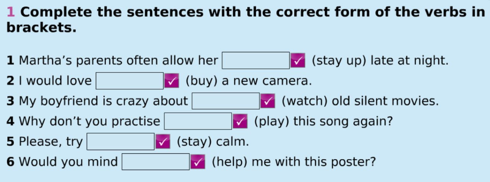
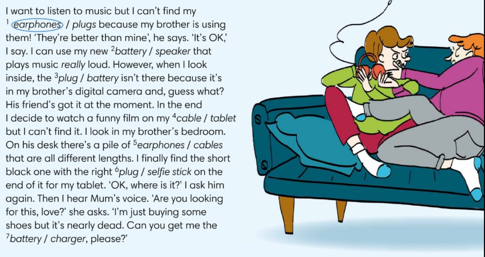

EidoS · English · 8 клас
Gerund or to + infinitive · Everyday technology
Everyday technology · Grammar + vocabulary · Learn, choose, explain, create
Після want, would like / would love, decide, hope, plan, allow someone, try (коли докладаємо зусиль) часто використовуємо to + verb.
I'd love to buy a camera.
They allow her to stay up.
Після enjoy, mind, practise, avoid та після прийменників (наприклад, about) використовуємо -ing.
Would you mind helping?
I'm crazy about watching films.
Try to do — докласти зусиль, щоб зробити. Try doing — спробувати певний спосіб як експеримент. У реченні Please, try to stay calm йдеться про зусилля.
Працюйте у власному темпі. Час біля кроків — орієнтир для 45-хвилинного уроку.
Розгляньте завдання з підручника. Потім виберіть правильну форму в кожному реченні. Після перевірки прочитайте пояснення.

Прочитайте історію на зображенні. Виберіть правильне слово для кожного з семи пропусків. Звертайте увагу на зміст речення, а не лише на переклад слова.

Ситуація: Ви збираєтеся на онлайн-урок. Навушники не працюють, заряд акумулятора низький, а зарядний пристрій залишився в іншій кімнаті.
Choose the most natural sentence.
Підказка: charger, battery, earphones, plug, speaker, cable, tablet.
Звіт підготовлено. Натисніть «Зберегти PDF» та оберіть збереження у вікні друку.
Відповіді не надсилаються на сервер. PDF створюється функцією друку Вашого браузера.
Gerund or to + infinitive · Everyday technology